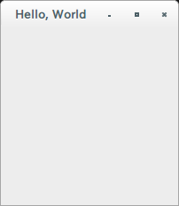
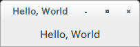
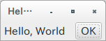
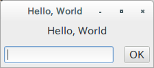
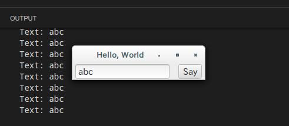
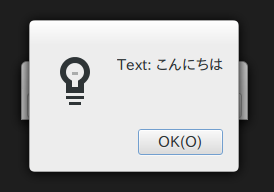
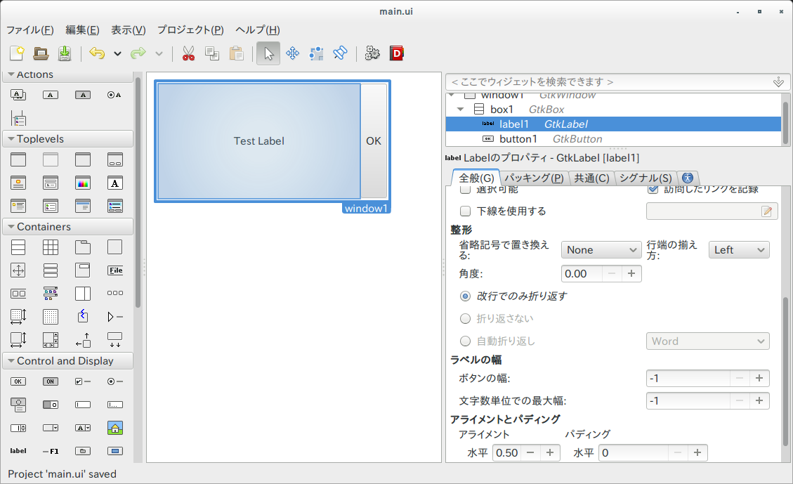

RustとGtk+で開発するGUIアプリケーション Rev 0.1
この文書の目的とすること
Rust言語とGtk+ / gtk-rs ライブラリを利用して、GUIアプリケーション（デスクトップアプリケーション）を作る方法を説明します。
gtk-rsライブラリを利用してRustとGtk+を組み合わせることを中心として記述し、以下の内容は対象としません。
- Rust言語自体の入門
- Gtk+の各種ウィジットの使い方
事前に準備する環境
環境は、以下の通りを想定します。
- Ubuntu 14.04
- Rust 1.7.0
利用するライブラリのバージョン
- Gtk+ 3.10
- Glade 3.16.1 (Optional)
- gtk-rs 0.0.7
Ubuntuでは、以下の通り実行することで、必要なライブラリのインストールが可能です。
# apt-get install libgtk-3-0-dev glade
なぜRustなのか
Gtk+アプリケーション開発の際に、Rustを利用するメリットは以下の通りです。
ランタイムが軽量な言語環境
Rustは、静的型付けのコンパイラ型言語で、コンパイラはネイティブコードを出力します。 C++のようにスコープによるリソース管理を前提とするため、GCレスで言語ランタイムが軽量です。
インタプリタによる言語解釈や、言語ランタイムによる起動のオーバーヘッドが少ない分、 軽快な動作が可能です。
とっつきやすいC言語系の文法＋GUIアプリケーションに便利な記法
CやJava, C#のようなC言語系の文法のため、比較的とっつきやすい記法になっています。
また、Rubyのイテレータの記法に似た、イベント処理に便利なクロージャの記法をサポートしており、 Gtk+をCから利用する場合と比較してスムーズなイベントハンドラの記述が可能です。
言語レベルでのデータ競合安全性の担保
GUIアプリケーションでは、UIのブロッキングを防ぐため、長時間の処理をスレッドで 行うことがあります。Rustではデータのスレッド境界越えに対して、言語レベルで保護機構を 備えているため、意図しないデータ競合を減らすことが可能です。 （不用意なスレッド境界越えを記述しようとすると、コンパイルエラーになります。）
Hello, World
まずは、プロジェクトを作成し、ウィンドウを表示します。
プロジェクトの作成
cargoでプロジェクトを作成します。
$ cargo new hello --bin
作成されたhello/Cargo.tomlにgtkを追加します。
[dependencies]
gtk = { version = "0.0.7", features = ["v3_10"] }
buildして、エラーにならないことを確認します。
$ cargo build
これでプロジェクトの作成は完了です。
ウィンドウの表示
ウィンドウを表示するコードを、以下のようにsrc/main.rs に記述します。
gtk::init()を呼び出し、gtk::Windowを作成/表示後、gtk::main()でメインループに入ります。
extern crate gtk;
use gtk::prelude::*;
fn main() {
gtk::init().expect("Failed to initialize GTK.");
let window = gtk::Window::new(gtk::WindowType::Toplevel);
window.set_title("Hello, World");
window.show_all();
gtk::main();
}
cargoコマンドを以下の通り実行し、ウィンドウが表示されれば、Hello, World成功です！
$ cargo run

ウィンドウを閉じたときに終了するコードを書いていないため、Ctrl+Cで終了させます。
コンテナ(container)とウィジット(widget)
ラベル ウィジットの追加
今度はできたウィンドウにラベルを追加してみます。
ラベルを追加するには、Labelインスタンスを作成し、windowにaddするだけです。このLabelのようなUI部品を、Gtk+では「ウィジット(widget)」といいます。
extern crate gtk;
use gtk::prelude::*;
fn main() {
gtk::init().expect("Failed to initialize GTK.");
let window = gtk::Window::new(gtk::WindowType::Toplevel);
window.set_title("Hello, World");
let label = gtk::Label::new(Some("Hello, World"));
window.add(&label);
window.show_all();
gtk::main();
}

Buttonを追加すると…？
では試しにButtonウィジットをaddしてみましょう。
let label = gtk::Label::new(Some("Hello, World"));
window.add(&label);
let button = gtk::Button::new_with_label("OK");
window.add(&button);
実行すると、以下のようなエラーが出力されます。
(hello:5518): Gtk-WARNING **: Attempting to add a widget with type GtkButton to a GtkWindow, but as a GtkBin subclass a GtkWindow can only contain one widget at a time; it already contains a widget of type GtkLabel
エラーは、GtkBinのサブクラスであるGtkWindowはひとつのウィジットしか含められないと言っています。どういうことでしょうか。
コンテナを追加
Windowのように、他のコンテナをもつことができるウィジットをGtk+では「コンテナ(Container)」といいます。 Windowは、Binというひとつのウィジットを持つことができるコンテナです。
もし先の例のように、複数個のウィジットを追加したい場合は、他のコンテナを使う必要があります。ここでは、一番よく使われる「Box」というコンテナを使ってみましょう。このコンテナはウィジットを縦あるいは横に並べることができます。
extern crate gtk;
use gtk::prelude::*;
fn main() {
gtk::init().expect("Failed to initialize GTK.");
let window = gtk::Window::new(gtk::WindowType::Toplevel);
window.set_title("Hello, World");
let hbox = gtk::Box::new(gtk::Orientation::Horizontal, 5);
let label = gtk::Label::new(Some("Hello, World"));
hbox.pack_start(&label, true, true, 5);
let button = gtk::Button::new_with_label("OK");
hbox.pack_start(&button, false, false, 5);
window.add(&hbox);
window.show_all();
gtk::main();
}
動作させると、このようになります。

Boxもコンテナであるため、もちろんWindowと同様にadd()することができます。しかし、広げるかどうかなどのパラメータをいくつか与えた方が便利であるため、普通はpack_startあるいはpack_endを利用します。
コンテナのネスト
コンテナもウィジットのため、コンテナをコンテナの中に入れることができます。
例として、ラベルの下に1行テキスト入力とボタンを置く画面を作ると、以下のようになります。 Entryが1行のテキストを入力するためのウィジットです。
extern crate gtk;
use gtk::prelude::*;
fn main() {
gtk::init().expect("Failed to initialize GTK.");
let window = gtk::Window::new(gtk::WindowType::Toplevel);
window.set_title("Hello, World");
let vbox = gtk::Box::new(gtk::Orientation::Vertical, 5);
let label = gtk::Label::new(Some("Hello, World"));
vbox.pack_start(&label, false, false, 5);
let hbox = gtk::Box::new(gtk::Orientation::Horizontal, 5);
let entry = gtk::Entry::new();
hbox.pack_start(&entry, false, false, 5);
let button = gtk::Button::new_with_label("OK");
hbox.pack_start(&button, false, false, 5);
vbox.pack_start(&hbox, true, true, 5);
window.add(&vbox);
window.show_all();
gtk::main();
}
動作させると、このようになります。

もしコードでUIを組み立てる場合は、様々なウィジットを活用しながら、コンテナに詰めていくという作業の繰り返しになります。
シグナル（イベント）
さて、ウィジットを配置することができるようになりましたが、相変わらずきちんと終了しないままです。 ウィンドウを閉じたときにアプリケーションを終了させるようにしましょう。
ウィンドウを閉じたときにアプリケーションを終了させるには、connect_delete_eventに関数を渡します。
最初のHello, Worldウィンドウを閉じたときに終了させるようにするには、以下のように記述します。
extern crate gtk;
use gtk::prelude::*;
fn main() {
gtk::init().expect("Failed to initialize GTK.");
let window = gtk::Window::new(gtk::WindowType::Toplevel);
window.set_title("Hello, World");
window.connect_delete_event(|_, _| {
gtk::main_quit();
Inhibit(false)
});
window.show_all();
gtk::main();
}
渡す関数には、Self(=window)とEventが渡ってきますが、どちらもここでは必要ないので_で無視します。 関数の返り値となる「Inhibit」はデフォルトハンドラを実行するかどうかを意味する値です。ここではどちらでもよいですが、falseを返しておきます。
このように、何かの契機で処理するための仕組みをGtk+ (が利用しているGLib Object System）では「シグナル」といっています。
ウィジットの値をハンドラ中で利用する
先の例に、1行テキスト入力とボタンを追加して、ボタンが押されたらコンソールに内容を表示するようにしてみましょう。
Buttonのクリックに反応するようにするには、connect_clickedを使います。
extern crate gtk;
use gtk::prelude::*;
fn main() {
gtk::init().expect("Failed to initialize GTK.");
let window = gtk::Window::new(gtk::WindowType::Toplevel);
window.set_title("Hello, World");
window.connect_delete_event(|_, _| {
gtk::main_quit();
Inhibit(true)
});
let hbox = gtk::Box::new(gtk::Orientation::Horizontal, 5);
let entry = gtk::Entry::new();
hbox.pack_start(&entry, true, true, 5);
let button = gtk::Button::new_with_label("Say");
button.connect_clicked(move |_| {
println!("Text: {}", entry.get_text().unwrap());
});
hbox.pack_start(&button, false, false, 5);
window.add(&hbox);
window.show_all();
gtk::main();
}
動作させると、このような形になります。

ここで大事なことは、クロージャにmoveキーワードを付与し、button変数の所有権をクロージャに移動させているところです。移動させないと、変数「entry」よりもクロージャのほうが長く生きる可能性があるため、変数の借用（borrow）では実際使うタイミングで変数がいなくなっている可能性があるとコンパイラが判断するためです。
外してコンパイルすると、その旨のエラーが出力されるのでわかります。
src/main.rs:24:28: 26:6 error: closure may outlive the current function, but it borrows
entry, which is owned by the current function [E0373]
src/main.rs:24 button.connect_clicked(|_| {
src/main.rs:25 println!("Text: {}", entry.get_text().unwrap());
src/main.rs:26 });
src/main.rs:24:28: 26:6 help: runrustc --explain E0373to see a detailed explanation
src/main.rs:25:30: 25:35 note:entryis borrowed here
src/main.rs:25 println!("Text: {}", entry.get_text().unwrap());
^~~~~
（略）
src/main.rs:24:28: 26:6 help: to force the closure to take ownership ofentry(and any other referenced variables), use themovekeyword, as shown:
src/main.rs: button.connect_clicked(move |_| {
src/main.rs: println!("Text: {}", entry.get_text().unwrap());""
src/main.rs: });
メッセージダイアログの表示
今度はprintln!()ではなく、メッセージダイアログを表示してみましょう。
メッセージダイアログを表示する例は、以下のようになります。
extern crate gtk;
use gtk::prelude::*;
fn main() {
gtk::init().expect("Failed to initialize GTK.");
let window = gtk::Window::new(gtk::WindowType::Toplevel);
window.set_title("Hello, World");
window.connect_delete_event(|_, _| {
gtk::main_quit();
Inhibit(true)
});
let hbox = gtk::Box::new(gtk::Orientation::Horizontal, 5);
let entry = gtk::Entry::new();
hbox.pack_start(&entry, true, true, 5);
let button = gtk::Button::new_with_label("Say");
let window_ = window.clone();
button.connect_clicked(move |_| {
let message = format!("Text: {}", entry.get_text().unwrap());
let dialog = gtk::MessageDialog::new(
Some(&window_),
gtk::DialogFlags::empty(),
gtk::MessageType::Info,
gtk::ButtonsType::Ok,
&message
);
dialog.run();
dialog.destroy();
});
hbox.pack_start(&button, false, false, 5);
window.add(&hbox);
window.show_all();
gtk::main();
}

MessageDialog::newの第1引数には、windowのOptionを渡しますが、windowそのものの所有権をmoveで クロージャに渡してしまうと、あとで使うはずのwindowが使えなくなってしまいます。そのため、clone()したものをクロージャで使います。
gtk::Windowのclone()は、Gtk+で利用しているGObjectのリファレンスカウントを増加させるもので、deep copyされるわけではありません。
なお、clone()しないとこのようなエラーが出力されます。clone()が必要かも、とエラーで言っています。
src/main.rs:41:5: 41:11 error: use of moved value:
window[E0382]
src/main.rs:41 window.add(&hbox);
^~~~~~
src/main.rs:41:5: 41:11 help: runrustc --explain E0382to see a detailed explanation
src/main.rs:25:28: 37:6 note:windowmoved into closure environment here because it has typegtk::auto::window::Window, which is non-copyable
src/main.rs:25 button.connect_clicked(move |_| {
src/main.rs:26 let message = format!("Text: {}", entry.get_text().unwrap());
src/main.rs:27
src/main.rs:28 let dialog = gtk::MessageDialog::new(
src/main.rs:29 Some(&window),
src/main.rs:30 gtk::DialogFlags::empty(),
...
src/main.rs:25:28: 37:6 help: perhaps you meant to useclone()?
ここまで来れば、すでに簡単なアプリケーションが作れるようになっているはずです。
Gladeの活用
以前の章のようにUIをコードで記述していけば、UIを作ることができますが、命令的な記述では手間がかかります。 そこで登場するのが、GladeというGtk+アプリケーションのUIデザイナーです。
GladeでのUIの作成
glade &でGladeを起動すると、UIデザインの画面が表示されるので、そこでウィジットをドラッグアンドドロップで配置していきます。

あとは、「ファイル＞名前をつけて保存」によりUIの定義が記述されたXMLファイルを保存します。ここでは、ファイルパスをsrc/resources/main.ui とします。
BuilderによるUI定義ファイルの呼び出し
GtkBuilderを利用すると、Gladeで保存したファイルからUIを作成することができます。Rustのinclude_str!マクロを利用すると、コンパイル時に文字列にしておいてくれるため、さらに便利です。
保存したmain.uiを表示するには、Builderを作り、必要に応じてget_objectで取り出してシグナルを接続します。
extern crate gtk;
use gtk::prelude::*;
fn main() {
gtk::init().expect("Failed to initialize GTK.");
let ui = include_str!("resources/main.ui");
let builder = gtk::Builder::new_from_string(ui);
let window1 : gtk::Window = builder.get_object("window1").unwrap();
window1.connect_delete_event(move |_, _| {
gtk::main_quit();
Inhibit(false)
});
window1.show_all();
gtk::main();
}
get_object()は、型がわからないため、明示的に型を指示します。